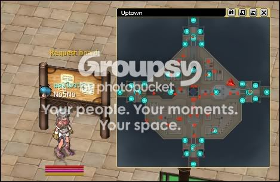
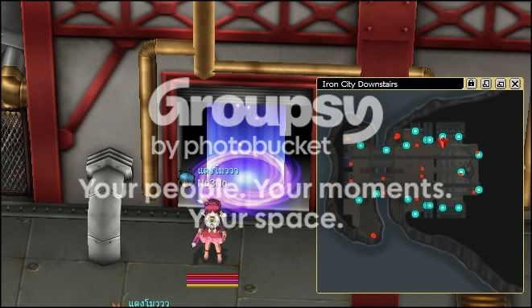
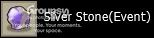
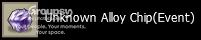
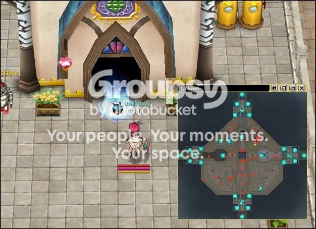
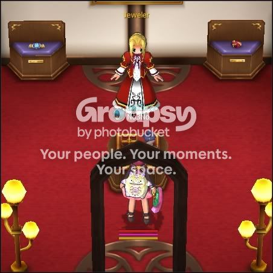

หน้า 231 จากทั้งหมด 296

โพสต์แล้ว:
เสาร์ 18 เม.ย. 2009 8:14 pmโดย ECO
แว่นคอม......กล่องคอนบนหอแสง
โพสต์แล้ว:
เสาร์ 18 เม.ย. 2009 9:07 pmโดย ECO
กรุณาเลิกเรียกเเว่นจีเอ็ม เหมือนเด็กเกรียนครับ...จีเอ็มเค้าไม่ได้ใส่แล้วจะเรียกอะไรนักหนา
แว่นคอมก็ได้จากลงดันเวล70ด้วยนะ
โพสต์แล้ว:
อาทิตย์ 19 เม.ย. 2009 1:21 amโดย ECO
งั้นต่อไปเรียกว่า แว่นคอมมานโดใส่ฟิลม์กันแดด ละกัน
โพสต์แล้ว:
อาทิตย์ 19 เม.ย. 2009 9:45 amโดย ECO
เควสชุดประจำอาชีพเลเวล 65 ของ คาบาลิส ได้แค่ชุดหรอคะ
จาก 4 กล่อง เปิดได้กล่องเดียว แล้วไม่มีแถมหมวกแบบที่อาชีพอื่นได้ หรอคะ

ทำครั้งแรกได้ชุด
ทำครั้งที่2 เปิดอีก 3 กล่องที่เหลือไม่ได้อ่าค่ะ
โพสต์แล้ว:
อาทิตย์ 19 เม.ย. 2009 9:59 amโดย ECO
Nitro_Z เขียน:งั้นต่อไปเรียกว่า แว่นคอมมานโดใส่ฟิลม์กันแดด ละกัน
เรียกว่าแว่นกันแดดจิ ขอให้ทุกคนในบอร์ดเรียกแบบนั้นแทนนะ..
Neko_Ruri เขียน:เควสชุดประจำอาชีพเลเวล 65 ของ คาบาลิส ได้แค่ชุดหรอคะ
จาก 4 กล่อง เปิดได้กล่องเดียว แล้วไม่มีแถมหมวกแบบที่อาชีพอื่นได้ หรอคะ
ทำครั้งแรกได้ชุด
ทำครั้งที่2 เปิดอีก 3 กล่องที่เหลือไม่ได้อ่าค่ะ
แปลว่าชุดนั้นเป็นแบบบอดี้สูธครับ คือตัวเดียวใส่ได้ทั้งตัว
โพสต์แล้ว:
อาทิตย์ 19 เม.ย. 2009 10:42 amโดย ECO
ทำเควสเปิดร้านลับกับคุณลุงที่ดาวน์ทาวน์ไปอ่าค่ะ ที่ต้องนำแกงกะหรี่ไปให้ 2 รอบ
ก็เปิดร้านขายทั้งบัตรผ่านปลอม กับพวก ยาต่างๆแล้ว
พอวันนี้จะไปซื้อ เข้าร้านคุณลุงไม่ได้อ่ะค่ะ มันขึ้นว่า "ล็อคอยู่"
ไม่ได้สังกัดทหารทิศไหนด้วยค่ะ ทำไมเข้าไปซื้อของไม่ได้คะ
โพสต์แล้ว:
อาทิตย์ 19 เม.ย. 2009 11:37 amโดย ECO
Neko_Ruri เขียน:ทำเควสเปิดร้านลับกับคุณลุงที่ดาวน์ทาวน์ไปอ่าค่ะ ที่ต้องนำแกงกะหรี่ไปให้ 2 รอบ
ก็เปิดร้านขายทั้งบัตรผ่านปลอม กับพวก ยาต่างๆแล้ว
พอวันนี้จะไปซื้อ เข้าร้านคุณลุงไม่ได้อ่ะค่ะ มันขึ้นว่า "ล็อคอยู่"
ไม่ได้สังกัดทหารทิศไหนด้วยค่ะ ทำไมเข้าไปซื้อของไม่ได้คะ
บัคน่ะครับ ตอนนี้มีแค่ตัวละครเก่าๆที่เคยเปิดเควสนั้นแล้วที่ซื้อได้
โพสต์แล้ว:
อาทิตย์ 19 เม.ย. 2009 1:51 pmโดย ECO
เรียกแว่นดำได้ไหมอ่า

โพสต์แล้ว:
อาทิตย์ 19 เม.ย. 2009 2:10 pmโดย ECO
แว่นดำมันจะไปซ้ำกะแว่นกลมดำรึเปล่าน่ะ
ถ้าจะเรียก เรียกแว่นเรย์แบน ดีมั้ย เพราะมันทรงแบบแว่นเรย์แบน
หรือจะเรียกแว่นแมททริค ก็ได้ เท่ดี

ชุดคาบา 65 รู้สึกว่า ถ้าของชายจะมีแค่ บอดี้สูทตัวเดียวครับ เปิดกล่องเดียว
แต่ถ้าของหญิง จะมีส่วนหมวก กะชุด รึไงเนี่ยแหละ
โพสต์แล้ว:
อาทิตย์ 19 เม.ย. 2009 2:34 pmโดย ECO
จะเรียกอะไรก็ช่างเค้าสิ แค่เรารู้ว่ามันคืออะไรก็น่าจะพอละมั้ง - -*
ไม่เดือดร้อนใครด้วย
จะให้คนอื่นทำอะไรตามใจตัวเองหมดเลยรึทั่น
โพสต์แล้ว:
อาทิตย์ 19 เม.ย. 2009 2:40 pmโดย ECO
ป่าวแค่ไม่ยากให้ชื่อมันเพี้ยน - -....
โพสต์แล้ว:
จันทร์ 20 เม.ย. 2009 8:56 amโดย ECO
แล้วบูสเบบี๋ล่ะ =3=
เรียกตุ๊กแกว่ากบก็ด้วย
แถมเรียกVates Druid Bardว่าพระอีก ฯลฯ
/me บินหนีไปอย่างว่องไว~
โพสต์แล้ว:
จันทร์ 20 เม.ย. 2009 5:42 pmโดย ECO
ไอพวกนั้นมันไม่ได้แปลกตรงไหนนิ
โพสต์แล้ว:
อังคาร 21 เม.ย. 2009 1:19 pmโดย ECO
Shidan Pendant
สำหรับสาย
Backpacker เท่านั้น
วิธีทำ
ให้ไปคุยกับ
Request Board ที่
Uptown ตำแหน่งดังรูป

เลือก
[ดูประกาศอื่นๆ]
แล้วก็
[อ่าน]
หลังจากนั้นให้ไป
Fareast City คุยกับ
Trip Personal Farmer Guild ที่ตำแหน่งดังรูป
ตอบรับคำขอร้อง เราจะได้

แล้วเดินทางไปที่
Iron South City ไปที่ตำแหน่งดังรูป

เมื่อเข้าไปข้างใน จะพบกับ
Tatarabe Master เมื่อคุยกับเค้า ให้รับคำขอความช่วยเหลือของเค้า เราจะได้

ให้เดินทางไปยัง
Morg City ไปตำแหน่งดังรูป

เมื่อเข้าไปแล้วให้คุยกับ
Millionaire Diamant จะได้

แล้วให้เรากลับไปที่
Iron South City คุยกับ
Tatarabe Master อีกครั้ง จะได้

จากนั้นให้กลับไปที่
Fareast City เพื่อคุยกับ
Trip Personal Farmer Guild เค้าจะให้

สุดท้าย ให้เราไปที่
Uptown ไปที่ตำแหน่งดังรูป

เข้าไปข้างในเพื่อคุยกับ
Jeweler

ให้เราจ่าย 10,000g เพื่อแลกกับการทำ
Shidan Pendant ให้กับเรา
แล้วเราก็จะได้
Shidan Pendant มา

โพสต์แล้ว:
อังคาร 21 เม.ย. 2009 7:49 pmโดย ECO
Doom Da De Da De Da De Doom Da De Da De Doom Doom